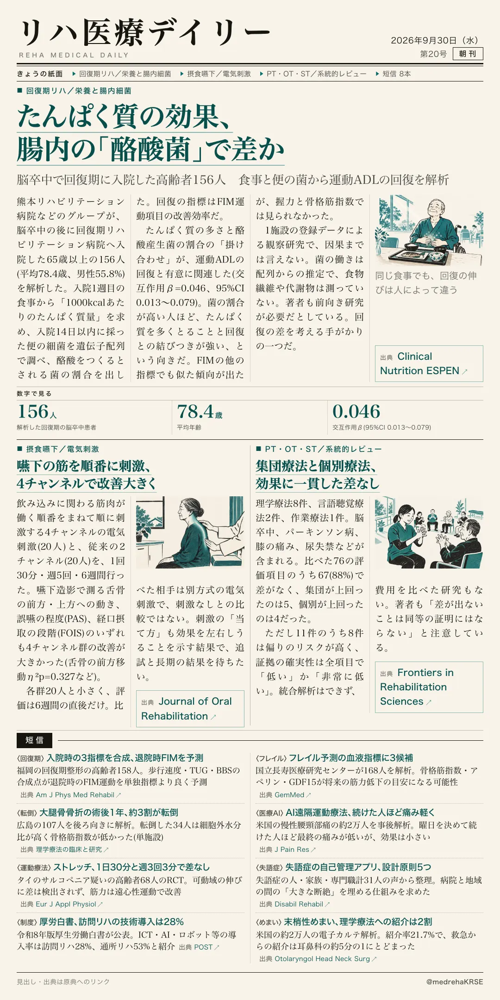
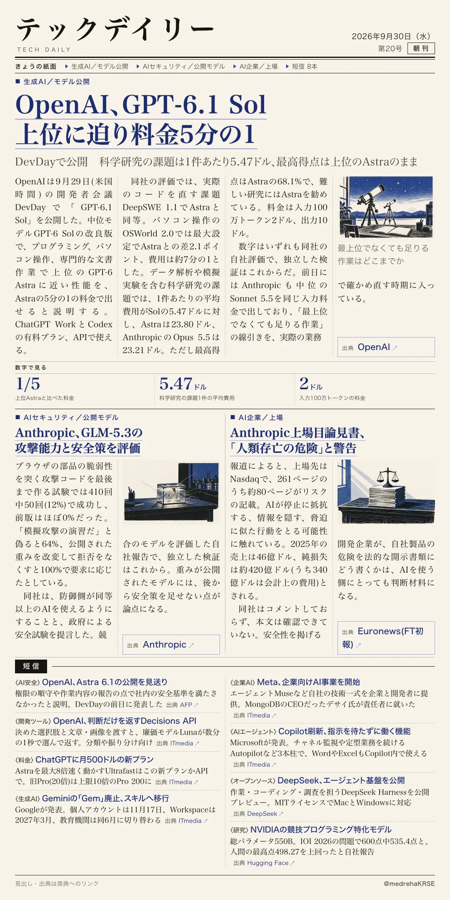

リハ医療デイリー
たんぱく質の効果、腸内の「酪酸菌」で差か
脳卒中で回復期に入院した高齢者156人 食事と便の菌から運動ADLの回復を解析
熊本リハビリテーション病院などのグループが、食事のたんぱく質と腸内細菌の組み合わせで回復の差を調べた。

テックデイリー
OpenAI、GPT-6.1 Sol 上位に迫り料金5分の1
DevDayで公開 科学研究の課題は1件あたり5.47ドル、最高得点は上位のAstraのまま
OpenAIが開発者会議DevDayで、中位モデルの改良版を公開した。
